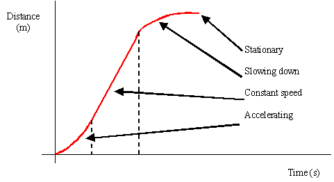
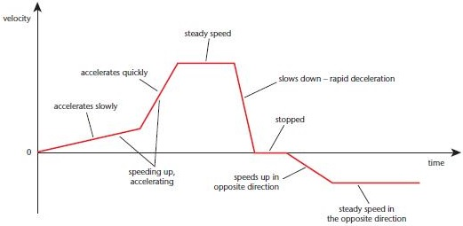
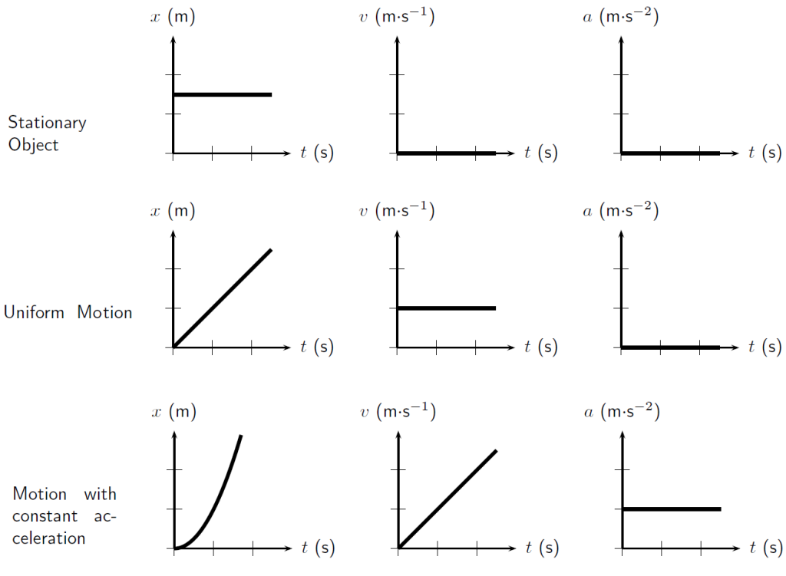

Distance-Time Graphs

-
For a distance-time graph, the distance never decreases.
-
When the object is stationary, the distance-time graph will be
horizontal.
-
The gradient of a distance-time graph is the instantaneous speed of
the object.
-
For straight line with positive gradient, it means that the object is
travelling at uniform speed
-
There is no straight line with negative gradient (as the distance
never decreases)
-
For curves, it means that the object is travelling at non-uniform speed
Displacement-time graphs
-
The details are similar as distance-time graphs, except that the
distance is now displacement, and speed is now velocity.
-
One minor difference: There is a straight line with negative gradient,
it means that the object is travelling at uniform velocity in the
opposite direction.
Velocity-time graphs

-
When the object is stationary, it is a straight horizontal line at 0.
-
When the object is undergoing uniform motion, it is a straight
horizontal line at v m s-1 where v is the
velocity of the object.
-
For straight line with positive gradient,
it means that the object is accelerating.
-
For straight line with negative gradient,
it means that the object is decelerating.
-
For curves, it means that the acceleration of the object is changing.
-
The area under the graph is the change in displacement of the object
Acceleration-time graphs
-
Area under graph is the change in velocity
The figure below shows the displacement-time graph, velocity-time graph
and acceleration-time graph for the respective state of motion. It
serves as a summary of the text above.
